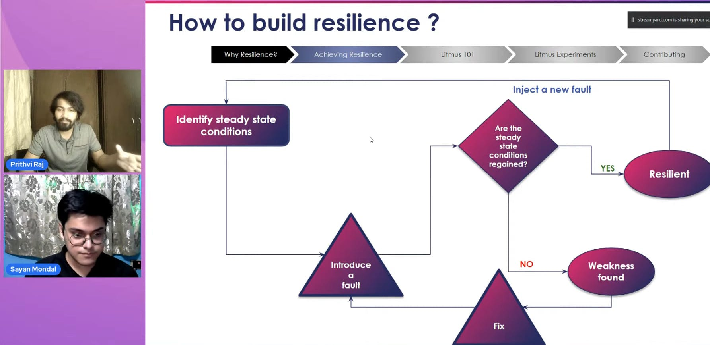

What are Downtimes?
Downtimes are that period during which production is stopped due to some operational setup or while making
repairs. In simpler terms, when there is an outage and the system goes down completely.
Issues of Downtimes
- Heavy loss to the companies
- Loss of reputation
- Lots of chaos
Few Instances of Downtime
- A 12-hour downtime cost Apple USD 25 Million in march 2015!
- In March 2019, a 14-hour outage costed Facebook around USD 90 Million!
- This is where Chaos Engineering comes into play, to cater to resilience, move to a reliable architecture
based on real-world scenarios.
This is where Chaos Engineering comes into play, to cater to resilience, move to a reliable
architecture based on real-world scenarios.
But what is Resilience?
Resilience is the ability of the system to stay afloat whenever there's an outage or a fault in the system.
Examples of weaknesses, if resilience would be absent!
- The dependent services may slow down if a pod is evicted from the node.
- The dependent services may become unhealthy if a node goes into a "not-ready" state or if there is a
memory leak in a container.
So, Chaos Engineering caters to many such challenges, a few of which are resilience,
reliability, security, etc.
What is Chaos Engineering?
It is the process of testing a system by deliberately injecting an outage possible in the future, in a
controlled fashion to identify the weakness/vulnerabilities and the unpredictable behavior of that system
and find a cure to them.
Steps involved in Chaos Engineering
- Steady State: Steady-state is the normal state (without any chaos).
- Hypothesis: Hypothesize the behavior of the system in a non-chaotic and chaotic state.
- Experiment: Putting the various weaknesses or outages to test the system
- Adapt: The system starts adapting to the changes and problems are rectified.

"The idea of Chaos Engineering is to focus more on the Ops and meanwhile not neglect the Dev."
Why Kubernetes for Chaos?
- The de facto standard in the industry
- Highly scalable and availability of more options
- High resiliency
- Cloud-Native
Cloud-Native is an approach that utilizes cloud computing to build and run scalable
applications in modern, dynamic environments.
Principles of Cloud Native Chaos Engineering
- Open Source
- Community Collaboration
- Open Observability
- Facilitates GitOps
- Open API and lifecycle management
Few issues in the existing Chaos Engineering Tools
- Scope to certain market
- Language Barrier
- Flaws in the security
- No native scheduling
Here comes Litmus which tries to mitigate all such problems!
So, Why Litmus?
- Cross-Cloud:
Have Litmus in one and inject chaos in any other. For instance, running Litmus on AWS and doing chaos on GKE.
- Cloud-Native:
Target all Cloud Native services that provide a great deal of flexibility for CI/CD and developers
- Successfully incorporated all the principles of CNCE.
- Mitigates
various issues in the existing Chaos Engineering Tools.
Find more details of the blog on my hashnode profile.